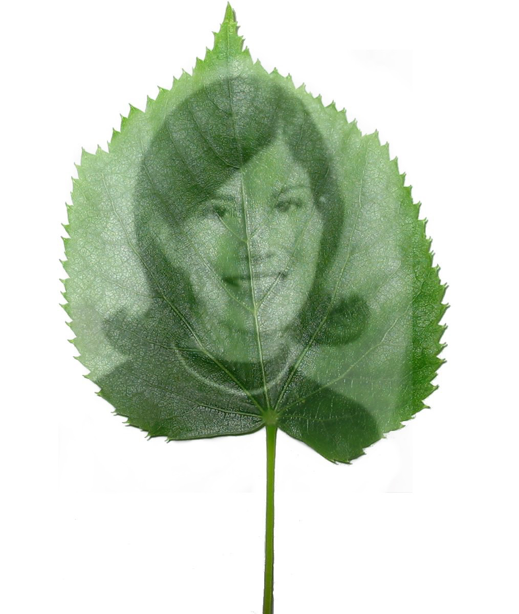
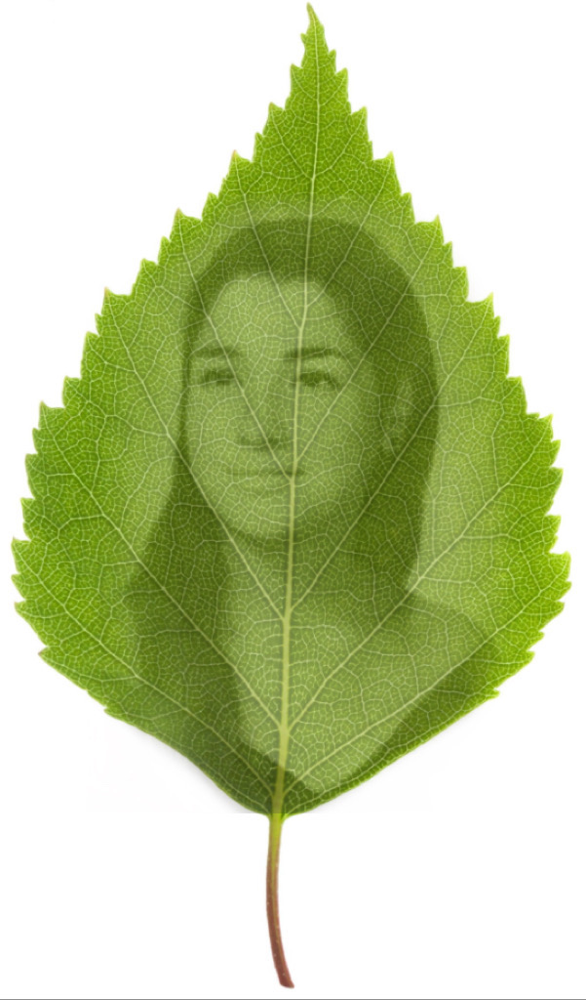
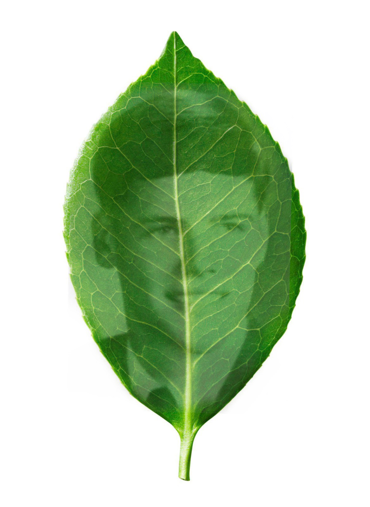
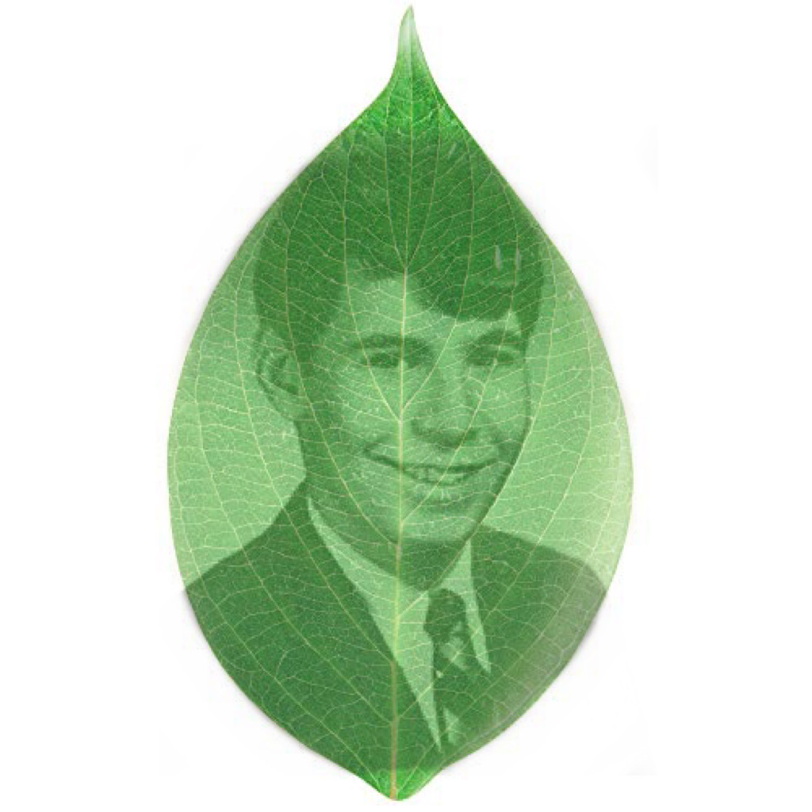
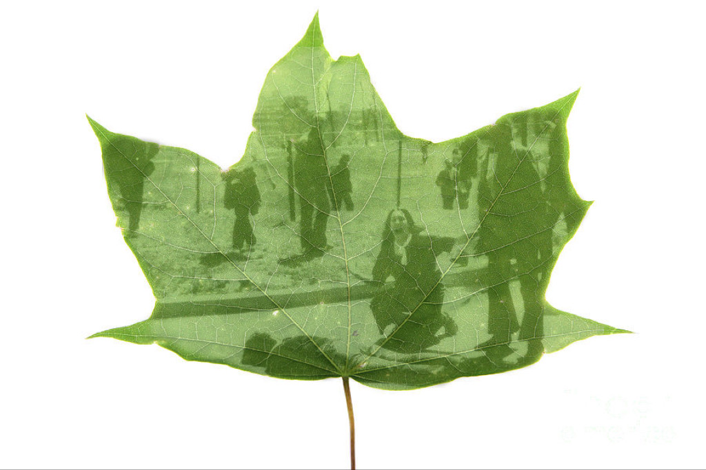
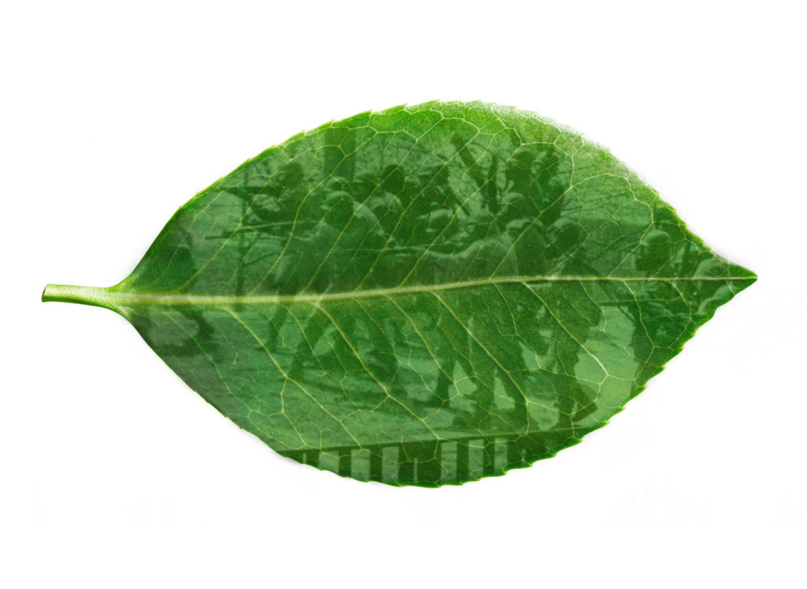
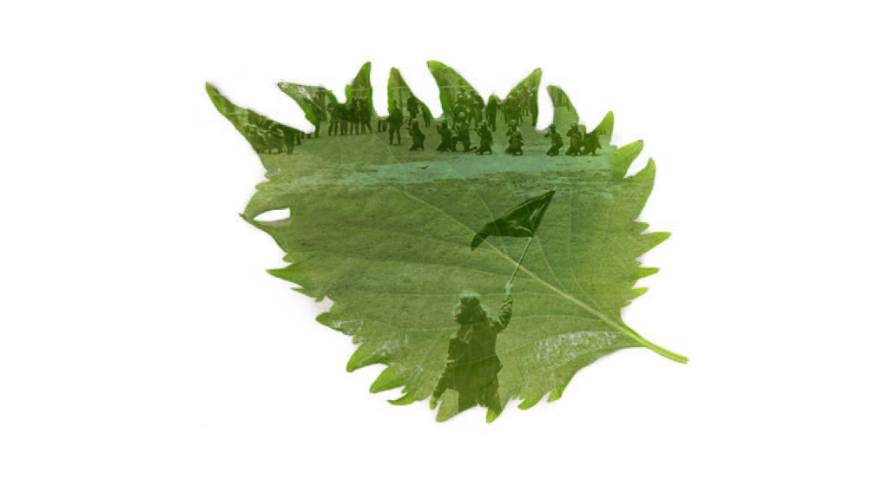

About
What is Chlorophyll Printing?
Chlorophyll printing is the organic technique
of bleaching the magnesium present on
chlorophyll, leaving an image on the leaf.
In inspiration of such, I took the opportunity
to make my own chlorophyll prints electronically
in memorium of the victims of the Kent State Massacre
that took place May 4, 1970.
Allison Krause

Allison Beth Krause was an American honor student
at Kent State University when she
was killed by soldiers of the Ohio Army National
Guard in the Kent State shootings, while protesting
against the invasion of Cambodia and the presence
of the National Guard on the Kent State campus. Krause
was born in Cleveland, Ohio, the daughter of Doris
Lillian (Levine) and Arthur Selwyn Krause. She had a
younger sister, Laurel.
Sandra Scheuer

Sandra Lee "Sandy" Scheuer was a student at Kent
State University when she was killed
by a bullet fired by Ohio National Guardsmen in the
Kent State shootings. She was an honors student in
speech therapy. She did not take part in the Vietnam
War protests that preceded the shootings.
William Schroeder

William Knox Schroeder was a student at Kent State
University, Ohio, when he was killed by Ohio National
Guardsmen in the Kent State shootings. Schroeder moved
with his family to Lorain, Ohio, when he was in
elementary school and graduated from Lorain High
School where he was an honors student and an
outstanding athlete. Already an Eagle Scout, at
age 17 Schroeder applied for the Army Reserve Officer
Training Corps (ROTC) Scholarship. He received the
Academic Achievement award from both the Colorado
School of Mines and from Kent State University,
where he was a psychology student.
Jeffrey Miller

Jeffrey Glenn Miller was an American student at Kent
State University in Kent, Ohio who was killed by the
Ohio Army National Guard in the Kent State shootings.
He had been protesting against the invasion of Cambodia
and the presence of the National Guard on the Kent
State campus. Four months before his death in May 1970,
Miller had transferred to Kent State from Michigan State
University. He quickly adapted to Kent State and soon had
many friends, including Allison Krause and Sandra Scheuer,
who both died with him on May 4.
Mary Ann Vecchio Kneels over Jeffrey

Mary Ann Vecchio, a 14-year-old runaway,
screams as she kneels over the body of Jeffrey
Miller after he was shot during an anti-war
demonstration at Kent State University in
Ohio on May 4, 1970.
The National Guard

The National Guard Opening Fire on Kent State
University Demonstrators, Ohio, USA, 1970.
The Day They Opened Fire

A man waves a black flag of protest as armed
soldiers stand in the distance with guns cocked,
ready to shoot.